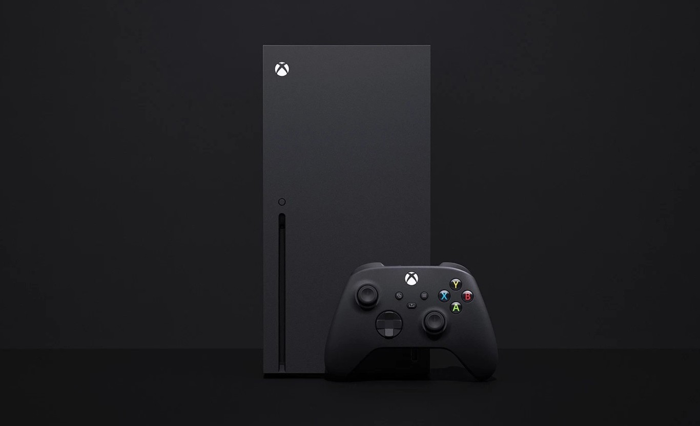

PC Gamer

También conocida como una computadora gaming, es una computadora diseñada específicamente para ofrecer un rendimiento óptimo en juegos de alta calidad gráfica y exigentes en términos de recursos. Estas computadoras están equipadas con componentes de hardware de alta gama que les permiten ejecutar juegos modernos y exigentes de manera fluida y con gráficos de alta calidad.
Es la quinta consola de videojuegos de sobremesa desarrollada por la empresa Sony Interactive Entertainment. Fue anunciada en el año 2019 como la sucesora de la PlayStation 4, la PS5 se lanzó el 12 de noviembre de 2020 en Australia, Japón, Nueva Zelanda, Estados Unidos, Canadá, México y Corea del Sur, y en el resto de países el 19 de noviembre de 2020. La PlayStation 5 junto con la Xbox Series X|S de Microsoft, lanzada el mismo mes, son parte de la novena generación de consolas de videojuegos.
La plataforma se lanzó en dos variantes: un modelo base con una unidad de disco óptico compatible con Ultra HD Blu-ray y una edición digital que carece de esta unidad, que sirve como modelo de menor costo para quienes prefieren comprar videojuegos mediante descarga digital.
Playstation 5
Xbox One

Xbox Series X y Xbox Series S (colectivamente, Xbox Series X|S), es una línea de videoconsolas de sobremesa desarrolladas por Microsoft y la cuarta generación de la familia de consolas Xbox. La familia de consolas, conocida colectivamente como "Project Scarlett"2 y revelada por primera vez en el E3 2019, incluye la Xbox Series X de gama alta, revelada en The Game Awards 2019 y cuyo nombre en código es "Project Anaconda", y la Xbox Series S de menor costo, anunciada en septiembre de 2020 y cuyo nombre en código es "Project Lockhart". Ambas consolas se lanzaron el 10 de noviembre de 2020 y compiten actualmente con la PlayStation 5 de Sony.3